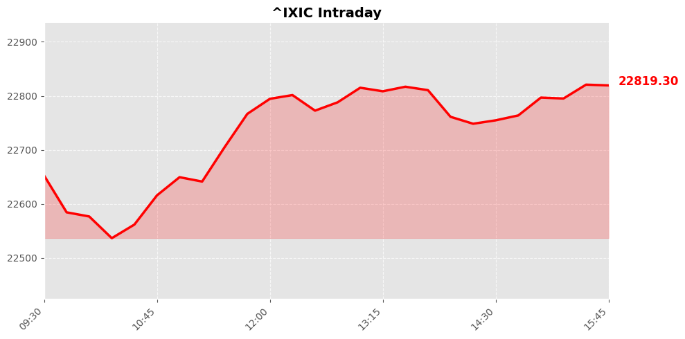
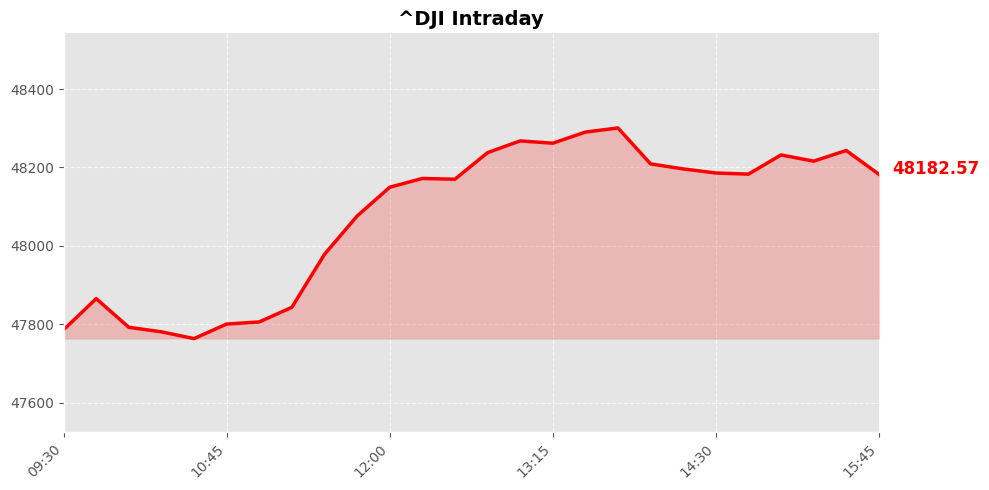
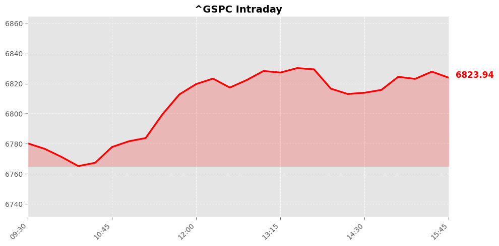

Daily Market Briefing
Market Overview



Market Analysis
The recent market activity reflects a cautiously optimistic sentiment among investors, evidenced by broad gains across major indices. The NASDAQ Composite led the rally, advancing approximately 0.83% to close at 22,822.42. This suggests strong investor confidence in the technology and growth sectors, possibly driven by positive earnings reports, technological innovation updates, or broader macroeconomic indicators pointing toward resilience in the sector.
Meanwhile, the Dow Jones Industrial Average increased by about 0.58%, reaching 48,185.8. The Dow’s performance indicates sustained confidence in large-cap, industrial, and financial stocks, which are often viewed as barometers of economic stability. The moderate rise suggests that while investors remain optimistic, they are also cautiously weighing potential macroeconomic headwinds such as inflationary pressures, interest rate policies, or geopolitical developments.
The S&P 500, which encompasses a broader spectrum of the market, gained approximately 0.62%, closing at 6,824.66. This consistent upward movement across indices reflects a balanced risk appetite among investors, with optimism driven by a mix of robust corporate earnings, easing concerns about economic slowdown, or favorable macroeconomic data.
Overall, the positive momentum indicates a market that is gradually recovering and building confidence, likely supported by a combination of strong corporate fundamentals and supportive monetary policies. However, investors remain attentive to potential volatility stemming from inflation trends, monetary tightening, or geopolitical risks that could influence future market trajectories. The current sentiment appears cautiously bullish, emphasizing resilience in the face of ongoing economic uncertainties.
Today's Headlines
News Analysis
Market Focus Points Today
-
Geopolitical Tensions and Energy Markets: The escalation of tensions in the Middle East, particularly Iran's effective closure of the Strait of Hormuz and its warnings to ships, has significantly impacted global energy markets. Oil prices surged amid supply disruptions, with US Gulf Coast refining margins benefiting from increased demand for fuel. These developments highlight the ongoing geopolitical risks that can cause volatility in commodities and energy stocks.
-
US Political Dynamics and Fiscal Policy Risks: The political landscape remains complex, with US Republicans blocking efforts to curb former President Trump's war powers regarding Iran. Additionally, discussions around tax policy, such as the implications of filing separately for Trump's tax breaks, continue to influence investor sentiment, especially in sectors sensitive to fiscal policy changes.
-
Corporate Earnings and Consumer Spending: Costco's recent sales performance has been strong, contributing to cautious optimism around retail sectors. However, broader concerns about inflation, energy costs, and geopolitical risks could pressure consumer spending, which remains a key driver of US economic growth.
-
Industry-Specific Developments: The NFL's ongoing media rights negotiations and antitrust investigations by the DOJ reflect regulatory scrutiny in the entertainment and sports sectors. Meanwhile, the rise in AI concerns among college students signals potential disruptions and opportunities across technology and education industries.
Potential Market Impact Factors
-
Energy Supply Disruptions: The closure of the Strait of Hormuz and Iran's warnings could lead to sustained volatility in oil prices, influencing energy stocks and commodities markets globally. Refining margins in the US Gulf Coast are likely to remain elevated temporarily, but prolonged disruptions could push inflationary pressures higher.
-
Geopolitical Uncertainty: Political stalemates in the US, particularly around Iran-related military powers, may lead to increased market anxiety, impacting risk assets like equities and emerging markets. The lack of congressional action may also hinder diplomatic resolutions, prolonging uncertainties.
-
Fiscal and Regulatory Policy: Changes in tax policy, especially related to filing statuses, can influence consumer disposable income and corporate profitability. The DOJ's antitrust probes into the NFL could lead to regulatory adjustments, impacting media rights valuations and related equities.
-
Consumer Behavior and Spending: The strong performance at Costco suggests resilience in some retail segments, but broader economic headwinds from energy costs and geopolitical risks could temper consumer confidence and spending growth.
Industry Trends Worth Noting
-
Energy and Commodities: Ongoing Middle East tensions underscore the importance of energy security and diversification. Companies in the oil and gas sector may experience heightened volatility, and investment flows could shift toward alternative energy sources.
-
Technology and AI: Growing concerns among students about AI's impact on careers point towards increased investment and innovation in AI-related industries. This trend could accelerate the adoption of automation and reshape workforce dynamics.
-
Regulatory Environment: Increased scrutiny of media rights and antitrust issues, exemplified by the NFL probe, suggests a trend toward tighter regulation in entertainment and sports industries. Companies may need to adapt to evolving legal frameworks and competitive landscapes.
-
Geopolitical Diplomacy: With Pakistan's efforts to broker peace in Iran amid high risks, geopolitical stability remains a critical factor for global markets. Diplomatic developments could either alleviate or exacerbate market tensions depending on outcomes.
In summary, today's market landscape is shaped by geopolitical risks, energy market fluctuations, regulatory scrutiny, and evolving industry dynamics. Investors should monitor these factors closely, balancing risk management with opportunities emerging from sectors poised for growth amid uncertainty.
Economic Indicators
Inflation Indicators
Employment Indicators
Consumer Indicators
Community Hot Stocks
| Rank | Symbol | Mentions | Source |
|---|---|---|---|
| 1 | MSFT | 58 | |
| 2 | IRS | 55 | |
| 3 | PUMP | 52 | |
| 4 | HIT | 47 | |
| 5 | SELF | 45 | |
| 6 | TALK | 39 | |
| 7 | VS | 39 | |
| 8 | CARE | 37 | |
| 9 | DRUG | 37 | |
| 10 | TSLA | 37 | |
| 11 | TURN | 36 | |
| 12 | LUCK | 35 | |
| 13 | GLP | 34 | |
| 14 | ADD | 32 | |
| 15 | FAST | 31 | |
| 16 | INTU | 30 | |
| 17 | BULL | 28 | |
| 18 | FORM | 28 | |
| 19 | FACT | 27 | |
| 20 | NVO | 27 |
Market Outlook
The recent market performance shows a resilient upward momentum across major indices, with the NASDAQ, Dow Jones, and S&P 500 gaining between 0.58% and 0.83%. This suggests investor confidence remains relatively robust in the short term, supported by steady economic indicators and a cautiously optimistic mood.
However, several geopolitical and policy-related developments introduce potential risks. Notably, comments from UK political figures highlight ongoing tensions over energy costs influenced by global power dynamics, which could exacerbate market volatility if geopolitical conflicts escalate further—particularly concerning Iran, as UK officials suggest a need for Britain to adopt a new strategic path amidst regional tensions. The US political landscape also remains uncertain, with recent Congressional gridlock over Iran war powers indicating a potential for policy impasses that could impact energy and defense sectors.
Additionally, the survey indicating nearly half of college students are reconsidering majors due to AI indicates a transformative shift in the labor market and technological landscape, which could influence sector-specific stocks, especially in AI and tech-related industries.
In the near term, markets are likely to remain cautiously optimistic but sensitive to geopolitical developments, especially related to Iran and energy policies. Investors should watch for signs of escalation in regional conflicts, policy shifts in energy and defense sectors, and broader economic indicators. Maintaining a diversified approach with an emphasis on sectors resilient to geopolitical shocks, such as technology and consumer staples, may help mitigate risks.
Overall, while the current momentum favors continued slight gains, heightened geopolitical tensions and policy uncertainties warrant caution. Short-term traders should stay alert for volatility driven by geopolitical headlines and policy debates.
Follow Us

Scan to follow StockGate
For more US stock market insights